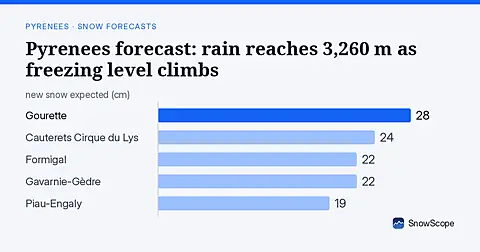
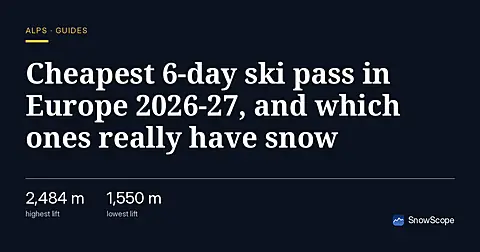
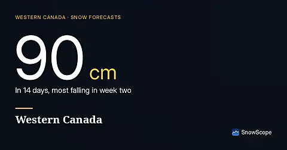
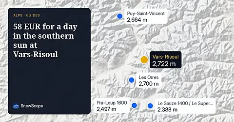
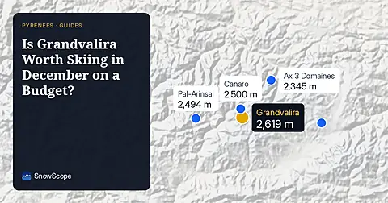
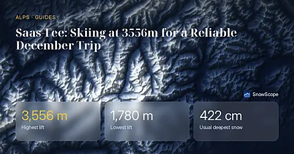
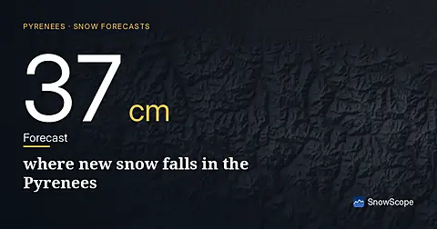
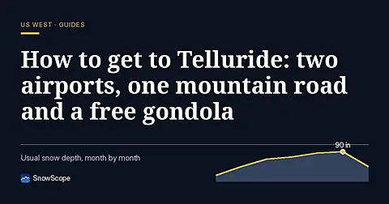
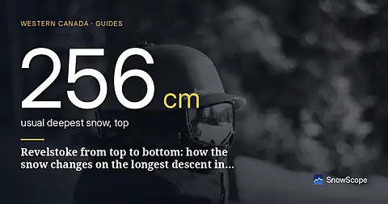
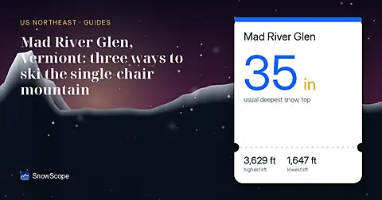

Snow reports · Where to ski
Daily snow reports for skiers: where the snow is, what is coming and where to ski, from the SnowScope snow map and measuring stations. Every number comes from that day's data.


Rain threatens upper slopes at Saddleback Mountain where 20 cm sits at 1,218 m. Freezing level rises to 3,760 m today, 22 November.

Whistler Blackcomb will receive 101 cm of new snow by November 25, far exceeding early-season norms. Mount Cain Alpine Park leads the region with 132 cm forecast.

Austria's largest ski pass area month by month: usual snow depth at the base, mid-mountain and the top from 46 past winters, where the snow is safe in December and where it is thin, and the weeks that never fail.

Hafjell above Lillehammer month by month: usual snow depth at the base, mid-mountain and the top from 46 past winters, the first snow, the deepest weeks and how the recent winters compare.


Mixed rain and snow expected across the Pyrenees over the next three days, with the freezing level rising above resort summits by Sunday. New snow forecast between 13–24 cm at altitude.

Early-season snow in the Alps is running 38% above the 46-year average. La Plagne's mid-slopes hold 36 cm more than usual for this date, with heavy snow forecast through Sunday.

Pick a region, dates, budget and what matters; get every resort ranked with the likely snow at the start, the pass, hotel and food per person, chalets to book, and a game mode.

Alpine day passes from 36 EUR: nine resorts compared by price, kilometres of runs and the snow they usually hold, to find the best day of skiing for your money.

Six days of skiing from 191 EUR: we ranked ten cheap ski weeks in Europe by price, then checked 46 past winters to see where the snow is reliable.

New snow forecast for 15 Japanese ski resorts from 20 to 25 November: Hakuba and Tsugaike lead with about 90 to 97 cm at the top, Niseko about 35 cm.

Only 16 US Northeast resorts have skiable snow on 18 Nov. Thin cover and rain-crust risk mean careful gear choices. Forecasts for 19-21 Nov show no new snow.

Freezing level reaches 1,500 m at Banff Sunshine Village on November 19. Fresh snow fell across Western Canada in the last 72 hours, but rain threatens the new powder.

Western Canada forecast: 90 cm new snow at Mount Washington in the next two weeks, with 70 cm expected in late November and early December.

Fresh snow across the US West has built depths well above normal. At Palisades Tahoe Alpine Meadows, upper slopes hold 75 cm (measured 2026-11-18), compared to 10 cm typical for mid-November.

Zermatt has 47 cm on upper slopes today, 690% above the November median. The 0°C level stays above 2200 m through Friday.

New snow forecast for the Alps through early December. Saint François Longchamp leads with 228 cm expected over 14 days, starting with 35 cm on Thursday.


96 cm of new snow forecast for Les Arcs over the next three days, with today bringing the heaviest falls.

Whistler Blackcomb saw 76 cm of new snow in the last 72 hours, with Mount Cain Alpine Park also receiving 64 cm, as of November 16, 2026.

Riksgränsen dominates Scandinavia with 173 cm of snow depth measured on 16 November, holding far more mountain water than any rival resort in the region.

At Big White on 15 November, the upper slopes hold 68 cm near the summit while the base remains bare; an extreme vertical gradient typical of early season.

79 cm new snow forecast for Les Grands Montets from 16–18 November, mostly above 2000 m elevation, based on forecast from 15 November.

Rain forecast as freezing level climbs to 4080 m; snow measured on 15 November is thin (under 20 cm) at all major Pyrenees resorts.

Ski 157 km of mapped runs in Serre Chevalier where the top of the mountain has a 100 % chance of snow by mid-December.

Ten European ski resorts ranked for December value, led by Les 2 Alpes with 75 cm of mid-mountain snow.

Boí Taüll starts at 2039 m and beats Baqueira Beret on day-pass price, though early December snow still takes some patience.

Orcières Merlette offers a high base at 1826 m and a 6-day pass from 227 EUR, making it a reliable choice for a December ski trip.

Is Alpe d'Huez worth it for December 2026? We check the snow odds, the starting price of 58.00 EUR, and compare it with Les 2 Alpes.

Cauterets offers 25 km of runs for 46 EUR, but our snow history shows that the best chance for cover is the last week of December.

Ski the 131 km of runs in the Forêt Blanche this December with a six-day pass for 298 EUR.

Monterosa Ski day passes run from 40.00 to 71.00 EUR online. In December the snow is up high: 124 cm usual at 3030 m, 6 cm at 1207 m.

Plan your December 2026 trip to Les Orres by matching weekly pass prices with our snow history of 46 past winters.

Compare Grandvalira and Spanish resorts in December 2026 for snow depths, lift heights, and prices starting from 49.00 EUR.

For a low-cost December family ski week at Astún-Candanchú, aim for late December when top slopes hold good snow in 67 % of past winters.

Puy-Saint-Vincent pairs a 44 EUR adult 1-day pass with solid December snow higher up, compared here with its big neighbour Serre Chevalier.

Grimentz-Zinal offers 71 km of runs and reliable high-altitude snow for your December trip, with 6-day passes at CHF 339.00.

Austria before Christmas: Galtür EUR 258 and Kühtai EUR 269 for 6 days with 30 cm in over 90 % of winters; glaciers cost more, small hills are a gamble.

Planning a December trip to Baqueira Beret? See our snow history, ticket prices starting at 70,00 € for a 1-day pass, and how it compares to Astún-Candanchú.

We rank French ski resorts by December snow odds and checked pass prices, starting from 36.00 EUR for an adult day pass in Les Karellis.

Grandvalira is often sold as cheap December skiing, yet natural snow at the base averages just 9 cm in past winters.

Compare December snow odds and checked lift pass prices starting at 40.00 EUR across Italian ski areas for your weekend drive.

Les 2 Alpes reaches 3511 m for high snow in December 2026, with an adult 6-day pass priced at 266.50 EUR.

Les Karellis offers 45 km of runs and a 6-day adult pass for 191.00 EUR with a 98 % chance of snow mid-mountain in late December.

Ski Livigno for 51.50 EUR per day before December 18 when the snow at the top reaches 30cm in 100 % of past winters.

Montgenèvre has 56 cm of usual December snow at its base, giving weekend drivers deeper early cover than Sestriere across the border.

Obertauern December skiing: 43 cm on a typical 15 December at mid-mountain, and a 6-day pass of EUR 331 before Christmas. Snow history and prices.

Pila above Aosta pairs a flat 60.00 EUR day pass with reliable December snow on its upper slopes.

Saas-Fee lifts reach 3556 m where our snow history shows 100 % of past winters have at least 30 cm of snow by mid-December.

Discover the calm slopes of St-Luc Chandolin where mid-mountain snow has reached 30 cm in 98 % of winters during late December.

Valloire-Valmeinier offers 131 km of runs and a 98 % chance of 30 cm of snow at mid-mountain by mid-December.

Can a cautious first-timer trust Courmayeur in December when mid-mountain averages 60 cm of snow across our past winters?

Stratton has 5 in (12 cm) on 2026-11-13 after 72 hours of snow. 28 Northeast resorts now have cover. Small amounts continue; best powder weeks arrive much later.

Telluride has 39 inches today. Peak snow weeks historically arrive in late December and March, not November.

Western Canada mountains carry 42% of their normal snow for mid-November as of 12 November, but 142 cm is forecast over the next two weeks.

Telluride's mid-slopes show 9 in (24 cm), running 92 percent of the seasonal average for mid-November. Saturday's system adds 5 in (13 cm) mostly above 10,000 ft.

Saint François Longchamp sits at just 3 cm of snow, 12% of usual depth for this time, but 110 cm is forecast in the next two weeks.

Forecast from November 12: US West gets 11 in (27 cm) of new snow Saturday November 14; 56 resorts receive powder, busy week starts.

Dent de Vaulion's upper slopes face rain as freezing level reaches 2800 m Thursday; higher resorts get fresh snow for the weekend.

Okemo Mountain will get 15 in (38 cm) of new snow by November 14, with 11 in (29 cm) on November 13, SnowScope from November 11 shows.

Freezing level climbs to 13,000 ft (3,960 m) at Aspen Snowmass, creating rain-on-snow risk as temperatures warm mid-November (forecast from 11 Nov data).

Mt.

Manning Park Resort snow is at 23% of normal for mid-November. Here's what to bring for thin cover and the changing conditions ahead.

On November 10, the freezing level reaches 5,313 ft (1,620 m) above Northeast summits, bringing rain before 20–25 cm of snow arrives.

Wolf Creek leads with mid-slope snow at 361% of normal for November 10, well ahead of typical and signaling significant water storage in the mountains.

Northeast forecast made 10 November: 10 in (25 cm) of new snow arriving through 13 November will transform snow cover from 1 resort to 62.

In 24 of 46 winters, resorts on the Italian and southern French side of the Alps had a relatively bigger winter than the northern side. The chart, the big years and the weather behind them.

Snow in December depends first on height. 46 past winters at 676 Alpine resorts show how much snow to expect on 1, 15 and 22 December, from below 1,200 m to above 2,400 m.

A cheap 3-day Lake Como plan for December with real 2026-27 prices: trains, ferries, a funicular and a ski day at Piani di Bobbio or Madesimo, what you save compared with Cortina, and the chance of snow at Christmas.

Piau-Engaly leads the forecast with 37 cm of new snow by 13 November; 24 cm is expected on 12 November.

Vail in numbers: a usual peak of about 64 in (162 cm) at mid-mountain over 46 past winters, March the deepest month, plus terrain, access and safety.

Zermatt in numbers: where the snow lasts, the safest months and how to reach the car-free village, from 46 past winters of snow data.

Steamboat, Colorado, for families: what works for toddlers, school-age kids, teens and parents, with the snow of 46 past winters at three heights.

Is Verbier good for beginners? When is the snow best? How do you get there? Answers from the 4 Vallées and 46 past winters of snow data.

How to spend a first day at Park City Mountain, Utah, and when to go: our snow history gives about 71 in (180 cm) at the usual mid-mountain peak over 46 past winters.

A walk-through of the Sella Ronda from Sëlva in Val Gardena: Gardena, Campolongo, Pordoi and Sella passes in order, with our snow history of 46 past winters.

Mt Baker, Washington: about 133 in (337 cm) at the usual peak at mid-mountain in 46 past winters, a world snowfall record, no lodging on the hill, and what that means.

Val d'Isère and the Espace Killy for beginners, improvers and experts, with the snow of 46 past winters at three heights.

Plan Mammoth Mountain by season: about 93 in (235 cm) at the usual peak at mid-mountain over 46 past winters, March deepest, long springs, and winters that swing.

Kitzbühel is famous and low. What 46 past winters say about snow at 762 m, 1,377 m and 1,993 m, how it has changed, and which weeks are the safer bet.

Ten practical points for a ski trip to Livigno: the roads in, the cold, the duty-free shops, the two ski sides and when the snow is best, from 46 past winters of our snow history.

Getting to Telluride in winter, airport by airport: Telluride Regional, Montrose, the drive on Highway 145 with the Colorado traction law, and the free gondola to Mountain Village.

Whistler Blackcomb for every level, with our snow history: about 370 cm at the usual peak at mid-mountain over 46 past winters, March and April the deepest months.

A practical kit list for Stowe, Vermont: layers, face cover, goggles, sharp edges and hand warmers, tied to the snow of 46 past winters on Mount Mansfield.

Skiing Lake Louise early in the season: why it starts early, what November and December snow usually looks like in 46 past winters, and how to ski thin early cover.

What is true about La Grave, the off-piste mountain under La Meije: terrain, safety, snow by month and the trend, from 46 past winters.

Big Sky, Montana, made easy to picture: 5,850 acres under Lone Peak, and snow that is about five times deeper near the top than at the base in 46 past winters.

Ski Revelstoke's whole vertical in your head first: the snow at the summit, mid-mountain and the valley base in 46 past winters, and when each part is at its best.

Seven days in the Silvretta Arena, one at a time: where the snow is, when to cross to Samnaun, and what 46 past winters say about Ischgl's snow at three heights.

Aspen Snowmass compared: Snowmass has about 75 in (190 cm) at the usual peak at mid-mountain over 46 past winters, Aspen Mountain about 69 in (174 cm). Terrain, access, safety.

Gourette and Cauterets side by side: heights, usual snow by month, the best weeks and how to get there, from 46 past winters.

Mad River Glen, Vermont: natural snow, about 30 in (75 cm) at the usual peak at mid-mountain over 46 past winters, February deepest. Three ways to plan a day there.

Banff Sunshine Village month by month: about 100 cm at mid-mountain in a usual March over 46 past winters, April deepest near the top, and a season into late May.

Freezing level reaches 3590 m across the Pyrenees on 9 November, bringing rain-on-snow to thin upper slopes. Pack waterproof layers and gaiters.

Alpe d'Huez faces the sun. How to plan a day by the clock and by height, with the snow of 46 past winters from the low villages to Pic Blanc.

Baqueira-Beret sits in the Val d'Aran, on the Atlantic side of the Pyrenees. What that means for its snow, tested with 46 past winters against La Molina, and when to go.

How to spend a first day skiing in Chamonix, from the Grands Montets above Argentière to the right hour for each slope, with 46 winters of snow data.

Cortina d'Ampezzo three ways: Tofana, Faloria-Cristallo and Cinque Torri-Lagazuoi, with 46 winters of snow data at three heights.

Chantarella, Marguns, Piz Nair, White Turf: the words you hear in St. Moritz, explained, and what 46 past winters of our snow history say about each height of Corviglia.

Davos and Klosters share six ski mountains. A day-by-day plan, starting on Parsenn, with what 46 past winters of our snow history say about its heights.

When to book Courchevel and the 3 Vallées, which village to stay in and where the snow lasts, planned from 46 past winters of snow data.

Bonneval-sur-Arc shows 52 cm upper slopes on 8 November. Weeks 10-11 are peak snow months. See what to pack for the forecast.

Aspen Snowmass at 5 centimetres, 23 percent of normal for mid-November. Freezing levels above 2,600 metres brought rain instead of snow across the US West on November 8.

St Anton and Ski Arlberg through the winter: how deep the snow usually is each month at three heights, from 46 past winters.

Mount Washington holds 145 cm on 8 November, the deepest in Western Canada, but the freezing level will climb above the summit by 11 November.

A year of snow in Sölden, phase by phase: when the glaciers whiten, the World Cup weekend, the long middle of winter and the spring weeks, from 46 past winters at three heights.

A practical notebook on Oukaïmeden in the High Atlas: when snow usually comes, how much, which slopes to aim for and how to get there from Marrakesh.

Freezing level reaches 3400m–3600m over the next three days, bringing rain to the snowpack from 09–11 November. Forecast from 08 November.

Telluride holds 115 cm (45 in) on 8 November. The freezing level climbs to 4,280 m (14,042 ft) on 9 November, bringing rain-on-snow risk to the highest slopes.

How to spend one good day at Luz-Ardiden, a small ski area above Luz-Saint-Sauveur in the Hautes-Pyrénées: the road, the two sectors, the snow of 46 past winters and which weeks to choose.

Whistler Blackcomb received 100 cm of fresh snow in 72 hours to 8 November, but it fell unevenly: 96 cm at the summit, none at the base.

Michlifen, near Ifrane, has snow in short episodes rather than a season. What 46 past winters show, why the usual depth is zero, and how to be there on the right days.

Three ways to spend a day from Méribel: east to Courchevel, south towards Val Thorens, or at home on Mont Vallon, with the snow of 46 past winters at three heights.

Mt Baker: 8 in (21 cm) at the summit versus less than 1 in (2 cm) at the base. November forecast shows how this height gap will shift.

Orcières Merlette leads the Alps forecast with 36 cm of new snow in the next three days, mostly on November 9–10, based on data from November 7.

Mt Baker leads the US West with 19 in (47 cm) of upper snow, expecting 13 in (33 cm) through November 9. Model forecast from November 6.

Ski Eldorado forecast 11 cm of new snow but freezing level reaches 3460 m on Nov 6, delaying snow arrival across the Northeast.

Freezing level reaches 3620 m on Sunday 8 November, above Aramón Cerler's 2618 m top, bringing rain-on-snow risk (forecast from 6 November data).